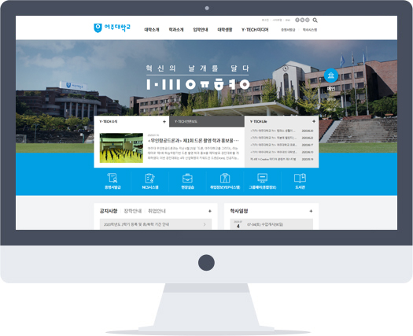
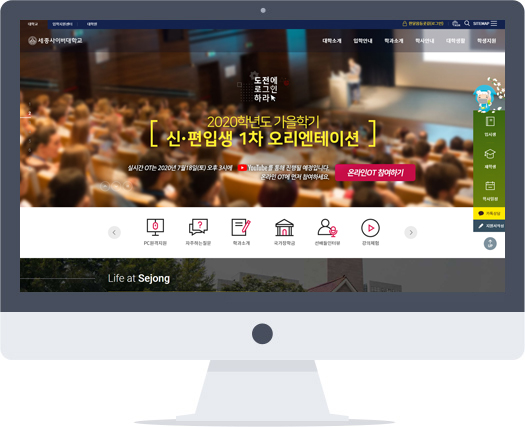
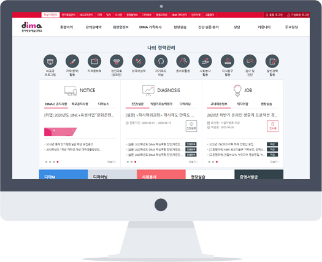

Hello :)
안녕하세요. 손수임입니다.
기획자 손수임의
개인 포트폴리오 사이트입니다 :)


사용자 경험을 만족시키는 즐거움으로 성장하는
기획자 손수임입니다.
기획을 기획답게
- 대학, 공공기관과 같은 정보 위주의 웹사이트 부터 e-러닝, 관리자 사이트 등 다양한 웹 및 앱 기획 경험이 있습니다.
- 단순 스토리보드 작성이 아닌 자사/타사 분석 및 UI/UX 트렌드 분석을 통한 전략 기획부터 QA 및 프로젝트 완료까지 기획자로서의 역할을 수행하였습니다.
협업 경험
- 함께 일하는 동료와는 더 나은 업무 프로세스를 고민하며 개선해 나갑니다.
- 디자이너, 퍼블리셔, 개발자가 원하는 기획자의 역할에 귀 기울입니다.
데이터 분석 능력
- Google Analytics, Adobe Analytics의 데이터 분석 툴 경험이 있으며, 데이터 기반의 분석을 통해 인사이트를 도출해 냅니다.
개발 이해도
- 컴퓨터 소프트웨어 공학 과정을 우수한 성적으로 수료하였습니다. 개발 구조에 대한 이해를 바탕으로 명확하게 업무를 진행하며 보다 수월하게 동료들과 커뮤니케이션 합니다.
(주)아이뱅크
2018년 4월 ~ 2020년 7월
에뛰드하우스, 바닐라코 등
2020.01 - 2020.07
Description
[운영] Google Analytics를 이용한 데이터 기반의 사용자 행동 및 구매 분석. Spreadsheets, Data Studio를 이용한 데이터 시각화
What did I do
- 주간•월간 보고서 및 인사이트
- 데이터 정합체크
- 태깅 검수
나이키
2018.04 - 2019.12
Description
[운영] 나이키 자사몰 상품 정보 관리. 상품 정보 수급, 정제 과정 매뉴얼화. 휴먼 에러를 줄이기 위한 정보 정제 및 검수 프로세스 개선
What did I do
- 상품 정보 수급 및 등록, 상품 트래킹
- 시즌 정산
(주)비브이에스
2016년 11월 ~ 2018년 2월
연성대학교
2017.09 - 2018.02
Description
[기획] 대표, 글로벌, 부속·부설기관, 학과 51개 사이트 및 CMS 개편
What did I do
- 스토리보드 (51개 사이트 + CMS)
- 메뉴구조도
- QA
- 관리자 매뉴얼
세종사이버대학교
2017.06 - 2018.02
Description
[기획] LMS 및 PMS(관리자) 사이트 고도화
What did I do
- 스토리보드 (메인 시안 + LMS + PMS)
- 메뉴구조도
- QA
- 사용자 가이드 및 관리자 매뉴얼
일자리위원회
2017.06 - 2017.12
Description
[기획] 홈페이지 리뉴얼
What did I do
- 스토리보드 (메인 시안 + 서브 페이지 일부)
- 메뉴구조도
- QA
여주대학교
2017.06 - 2018.01
Description
[기획] 대표, 입시, 부속·부설기관 7개 사이트 개편
What did I do
- 스토리보드 (메인 시안(대표/입시) + 부속·부설기관)
- 메뉴구조도
- QA
전자출결관리시스템 (㈜유웨이어플라이)
2017.03 - 2017.04
Description
[기획] 전자출결관리시스템 디자인(UI) 개편
What did I do
- 스토리보드 (Web(메인) + App)
- 메뉴구조도
- QA
- 사용자 가이드 및 관리자 매뉴얼
동아방송예술대학교
2016.11 - 2017.04
Description
[기획] 학생이력관리시스템 고도화
What did I do
- 스토리보드 (Web + App)
- 메뉴구조도
- QA
- 관리자 매뉴얼
Projects

Yeoju Institute of
Technology
대표, 입시, 부속·부설기관 홈페이지 리뉴얼
Web
작업 내용
- 메인 시안, IA, SB 작업
- 7개 홈페이지별 타 대학/자 대학 분석
- 메인 전략에 맞는 제안 시안 타입별 구성
기획 의도
- 방문 목적에 맞는 메인 컨텐츠 구성
- 입학 전형을 명확히 구분하여 단계적 접근 유도
- 입시 흐름을 직관적으로 파악 가능한 입시 캘린더

Sejong Cyber
University
LMS, 관리자 사이트 리뉴얼
WebApp
작업 내용
- 메인 시안, IA, SB, 테스트, 사용자 가이드 작업
- 기존의 UI/UX를 개선한 페이지별 TO-BE 작업
- 신규 기능 타사 분석 & 현 사이트 적용 방안 제안
기획 의도
- 학습 현황을 한눈에 파악할 수 있는 대시보드 UI
- 사용자 맞춤 학습 알림 영역 구성
- 직관적인 타임라인 형태의 강의 목록

Dong-Ah Institute of
Media and Arts
학생이력관리시스템 고도화
WebApp
작업 내용
- IA, SB, 테스트, 사용자 가이드 작업
- 웹 페이지를 앱 화면화
- 신규 기능에 대한 프로세스 흐름도 정의
기획 의도
- (App) 화면 크기에 자유롭고 단순명료한 정보 표현을 위한 카드형 UI
- (App) 텍스트보다 아이콘을 활용한 상태 표시
- (App) 화면 전환과 프로그레싱 바를 활용한 진행 단계 표현